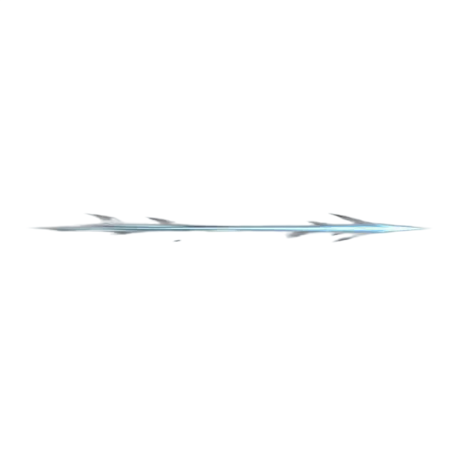

<!doctype html><html lang="zh-CN"><meta charset="utf-8"><title>斩钢闪 · 官方演示参考版</title>
<style>body{margin:0;background:#0c1a22;color:#dcf0f8;font:16px system-ui}main{width:960px;margin:24px auto}h1{font-size:24px}p{color:#9dbcc8}canvas{width:960px;height:540px;image-rendering:pixelated;border:1px solid #34544f}button,select{padding:8px;background:#193540;color:#def5ff;border:1px solid #537383;margin:6px}a{color:#99dfff}img{max-width:960px}</style>
<main><h1>斩钢闪 · 瞬刺风痕</h1><p>参考官方 Q 的窄亮线与短促破风感 · 人物和特效独立 · 鼠标选择任意方向</p>
<button id="play">重播</button><button id="compare">对比上一版</button><label>速度 <select id="speed"><option value="1">正常</option><option value=".25">慢放</option></select></label><label>逐帧 <input id="scrub" type="range" min="0" max="720" value="0"></label>
<canvas width="480" height="270"></canvas><p id="status"></p><p>新生成的独立动画（原始时长；上方预览按攻击节奏播放）</p><p><a href="https://www.leagueoflegends.com/en-us/champions/yasuo/">官方参考</a> · <a href="wind.webp">动画文件</a> · 尚未替换游戏</p></main>
<script type="module">
const canvas=document.querySelector('canvas'),ctx=canvas.getContext('2d');
const load=src=>new Promise((ok,no)=>{const i=new Image();i.onload=()=>ok(i);i.onerror=no;i.src=src});
const [body,wind,oldWind]=await Promise.all([load('/assets/heroes/yasuo/q-draw-2026-10-13/body.png'),load('./wind-atlas.png'),load('../q-v36-monochrome/clean-atlas.png')]);
const clip=await (await fetch('./clip.json')).json(),oldClip=await (await fetch('../q-v36-monochrome/clip.json')).json();
let age=0,last=0,angle=0,paused=false,old=false;
document.querySelector('#compare').onclick=e=>{old=!old;age=0;paused=false;e.target.textContent=old?'返回官方参考版':'对比上一版'};
document.querySelector('#play').onclick=()=>{age=0;paused=false};
document.querySelector('#scrub').oninput=e=>{age=Number(e.target.value)/1000;paused=true};
canvas.onpointermove=e=>{const r=canvas.getBoundingClientRect();angle=Math.atan2((e.clientY-r.top)*270/r.height-132,(e.clientX-r.left)*480/r.width-240)};
canvas.onclick=()=>{age=0;paused=false};
function tick(now){const dt=last?Math.min(.1,(now-last)/1000):0;last=now;if(!paused)age+=dt*Number(document.querySelector('#speed').value);if(age>1.4)age=0;
ctx.fillStyle='#19312c';ctx.fillRect(0,0,480,270);ctx.strokeStyle='#29453e';ctx.lineWidth=.5;
for(let x=0;x<480;x+=20){ctx.beginPath();ctx.moveTo(x,0);ctx.lineTo(x,270);ctx.stroke()}for(let y=0;y<270;y+=20){ctx.beginPath();ctx.moveTo(0,y);ctx.lineTo(480,y);ctx.stroke()}
ctx.imageSmoothingEnabled=false;const dx=Math.cos(angle),dy=Math.sin(angle),f=age>=.72?0:age<.16?Math.floor(age/.16*6):age<.24?6+Math.floor((age-.16)/.08*9):Math.min(37,15+Math.floor((age-.24)/.48*23));
ctx.save();ctx.translate(240,150);ctx.scale(dx<-.001?-.375:.375,.375);ctx.drawImage(body,f%8*64,Math.floor(f/8)*113,64,113,-32,-108,64,113);ctx.restore();
const begin=.16,end=old?.4:.34;
if(age>=begin&&age<end){const active=old?oldClip:clip,count=active.count,fi=Math.min(count-1,Math.floor((age-begin)/(end-begin)*count));
ctx.save();ctx.translate(240+dx*10,132+dy*10);ctx.rotate(angle);ctx.imageSmoothingEnabled=true;
ctx.globalAlpha=Math.min(1,(age-begin)/.012,(end-age)/.04);
const w=110,h=w*active.height/active.width;
ctx.drawImage(old?oldWind:wind,fi%4*active.width,Math.floor(fi/4)*active.height,active.width,active.height,-w*.08,-h/2,w,h);ctx.restore();}
document.querySelector('#status').textContent=`${Math.round(angle*180/Math.PI)}° · ${Math.round(Math.min(age,.72)*1000)} ms · ${old?'上一版黑白风刃':'新生成瞬刺风痕 · 180 ms'}`;
requestAnimationFrame(tick)}requestAnimationFrame(tick);
</script></html>
